Les primeres agrupacions d'humans que arribaren a les Illes Balears ho feren durant el neolític, però els arqueòlegs no han pogut determinar la seva procedència amb exactitud, degut majorment a que les Balears són les illes mediterrànies més tardanes en ocupar-se. Les restes més antigues datades fins ara es troben a la Cova de Canet, a Esporles, on s'han trobat indicis de carbó que es calcula que es tracten de l'any 7200 abans de Crist. Encara així, no es té evidència certa d'un poblament definitiu fins a final del quart mil·lenni. En aquesta pàgina es recullen els jaciments arqueològics més destacats de les illes de Mallorca i Menorca d'aquest període, que s'estén fins a l'ocupació romana de l'any 123 abans de Crist.
Jaciments de Mallorca:
| BALMA DE SON MATGE Aquest abric rocós es troba situat a l'Estret de Valldemossa, a la possessió de nom homònim, on s'han trobar restes d'ocupació entre el mileni cinqué i el primer mileni abans de Crist. |
 |
| COVA DE CANET El jaciment més antic de les Balears, datat aproximadament del seté mileni abans de Crist, trobada a una cavitat càrstica al municipi d'Esporles. |
 |
| COVA DE MULETA Jaciment arqueològic situat a Sóller, a la zona de la Serra de Tramuntana, on es trobaren els ossos humans més antics de les Balears. |
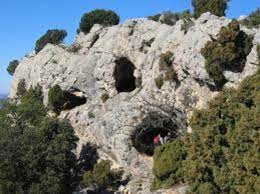 |
| DOLMEN DE S'AIGUA DOLÇA Situat a la Colònia de Sant Pere, prop d'Artà, a la costa de Betlem, es troba un dels tres dolmens de Mallorca. És un jaciment fonamental per entendre les tradicions funeràries de l'època. |
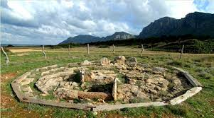 |
| DOLMEN DE SON BAULÓ DE DALT Prop de Can Picafort es troba aquest altre dolmen ubicat a l'illa de Mallorca. |
 |
| DOLMEN DE SON REAL Situat a la Funca Pública de Son Real, que pertany a Santa Margalida, es troba el darrer dels dolmens mallorquins. |
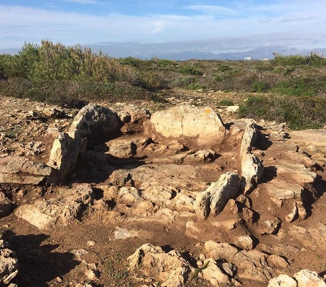 |
| ILLOT DE SA GALERA A aquest illot del litoral mallorquí, es trobà un jaciment amb restes d'un dels primers pobladors de l'illa de Mallorca. |
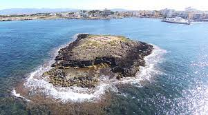 |
| NECRÒPOLIS DE SON PELLISSER Situat a Calvià es troba aquest jaciment, a l'interior d'una cova natural amb quatre sales que contenien restes arqueològiques. |
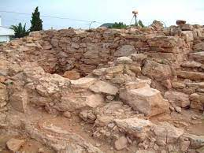 |
| NECRÒPOLIS DE SON SUNYER Necròpolis pretalaiotica situada a Palma, entre els nuclis de Can Pastilla i S'Arenal. |
 |
Jaciments de Menorca:
| NAVETA DE BINIANIC Naveta de soterrament situada a Alaior |
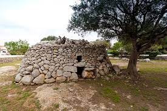 |
| TORRE D'EN GALMÉS Poblat situat entre Alaior i Son bou |
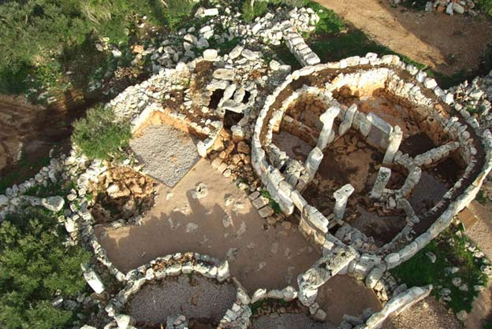 |
| CALA MORELL Necròpolis situada a 9km de Ciutadella |
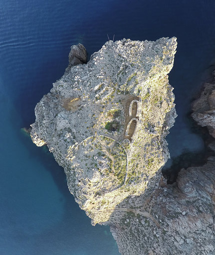 |
| CALES COVES Necròpolis situada en Alaior |
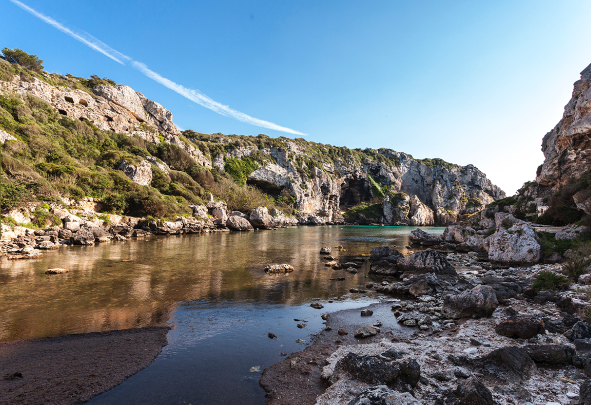 |
| HIPOGEU TORRE DEL RAM Hipogueu situat en Alior |
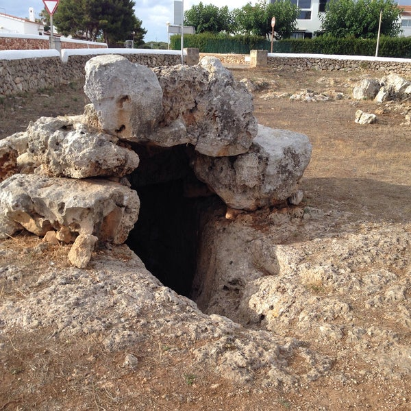 |
| SON NA CAÇANA Santuari situat en Alaior |
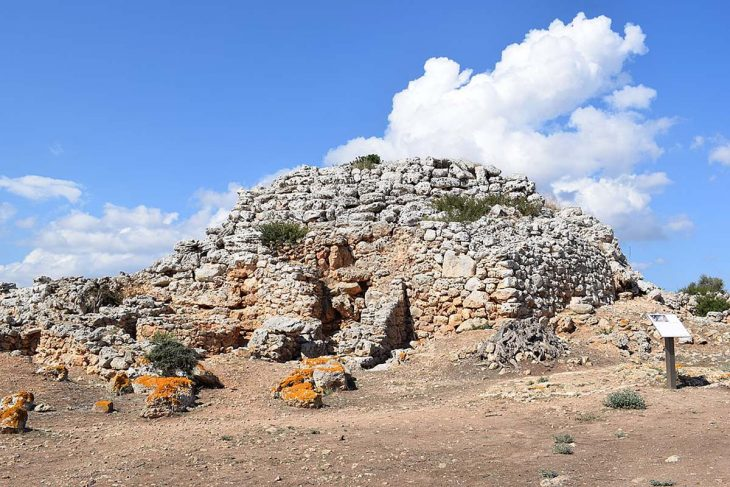 |
| TORRELLAFUDA Poblat situat a 9km de ciutadella |
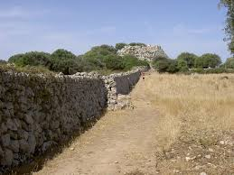 |
| SON CATLAR Poblat situat a 7.5km de Ciutadella |
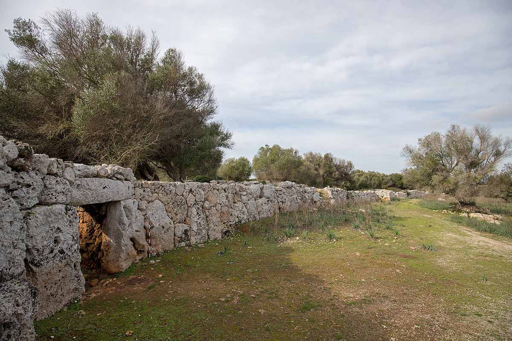 |
| TALATI DE DALT Poblat situat a 4km de Mahó |
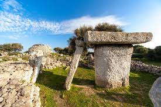 |
| TREPUCÓ Poblat situat a Mahó |
 |
| MONFETI Poblat situat a Ciutadella |
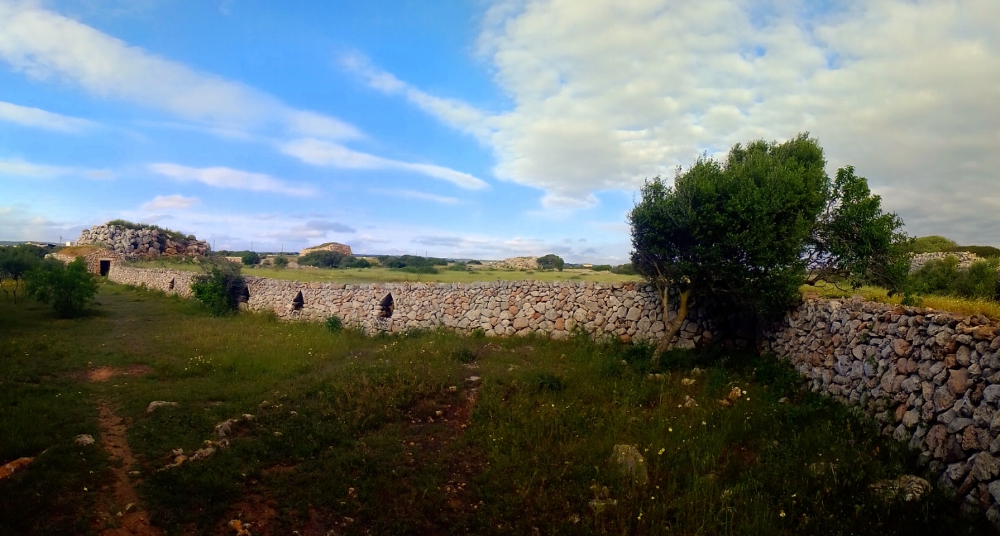 |
| ES CASTELLÀS DES CAPARROT DE FORMA Conjunt d'hipogeus situat en Cala Canutalls a 10km de Mahó |
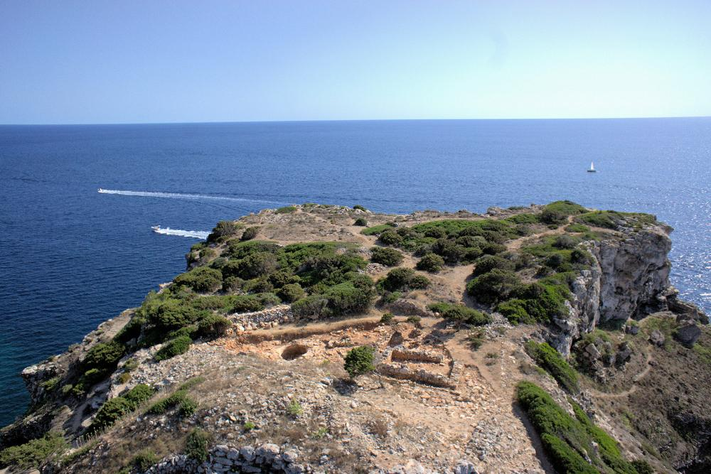 |
| TORRALBA D'EN SALORT Poblat situat a Alaior |
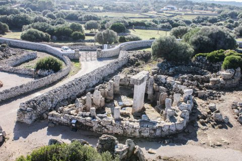 |
| BINISSAFULLET Poblat situat a Sant Lluís |
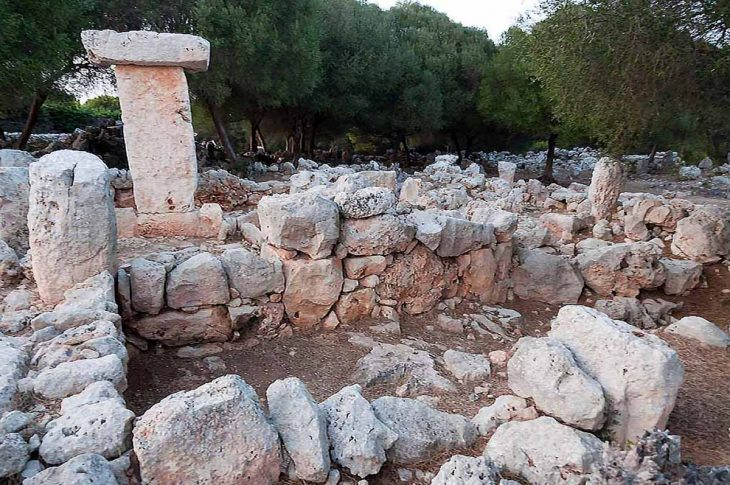 |